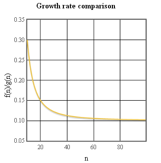
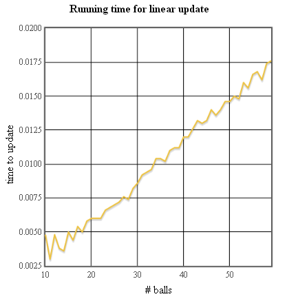

Growth Rates of Functions Help Center
As part of this class, we will model the growth rates of certain quantities associated with a program, such as the number of statements in its execution trace, its running time, or the size of its computed output. In these cases, our goal will be to determine a function
Given two function
Note that in our comparison of functions, we consider functions that are constant multiples of each other to be "equivalent". This choice reflects the fact that we are more concerned with the growth in the size of a quantity than the actual value of the quantity. For example, the running time of a program may depend on many factors such as the power of computer's processor, the speed of its operating system, and the performance of any environment that runs the computation (like a web browser). However, if the running time of a program grows at an exponential rate, the processing power of even the fastest computers will be quickly overwhelmed.
Techniques for comparing growth rates
In practice, comparing the growth rates of the functions that we will encounter in this class is relatively easy. Here are some simple rules that you should remember:- Two polynomial functions
f(n) andg(n) grow at the same rate if they have the same degree. Lower degree terms in these functions have no effect on the relative growth rates. - If the degree of a polynomial function
f(n) is higher than the degree ofg(n) ,f(n) grows faster thang(n) . Conversely, if the degree off(n) is lower,f(n) grows slower thang(n) . - The function
log(n) grows faster than the constant function1 and slower than the linear functionn . The functionnlog(n) grows faster thann and slower thann2 . - Any exponential function
n with>1 grows faster than any polynomial function. The factorial functionn! grows faster thann and, consequently, faster than any polynomial function.
One simple visual technique for comparing the growth rates of pairs of functions is to plot

An example from ball physics
Games like Pong involve a ball bouncing around a closed domain. One interesting generalization of this situation is to allow several balls that bounce off of each other as well as the walls of the domain. This CodeSkulptor program allows the user to click in the canvas to spawn new balls, and displays the frame rate (number of draws per second) of the resulting simulation. As the number of balls increases, the time taken to compute all ball/ball collisions during each physics update in the simulation increases and the frame rate of the simulation begins to slow.
Since each one of the
One method for accelerating this physics update is to divide the canvas into a grid whose cells are roughly the size of the balls. Before computing ball/ball collisions during a physics update, each ball is assigned to the cell that contains the center of the ball. Since the size of the grid cells are the diameter of the ball, a maximum of four balls can be assigned to any one cell. Then, during the collision phase, a ball is tested against only those balls in its own cell and its eight spatially-adjacent neighbors. This limits the total number of balls that needs to be tested for collision to be less than or equal to
This CodeSkulptor program implements this alternative algorithm for performing physics updates. The left plot below shows the time per update plotted as a function of the number of balls. Observe that the running time for each update appears to grow linearly as a function of the number of balls. The right plot shows the ratio of the running times and the function

This example illustrates the importance of algorithms and our analysis of their efficiency. At first glance, our original method seemed simple and efficient. However, we note that the added complexity of our improved collision method is well worth the effort since the enhanced speed of the update method allows us to add many more balls to our simulation.
Last Modified Thu 30 Apr 2015 2:42 PM PDT